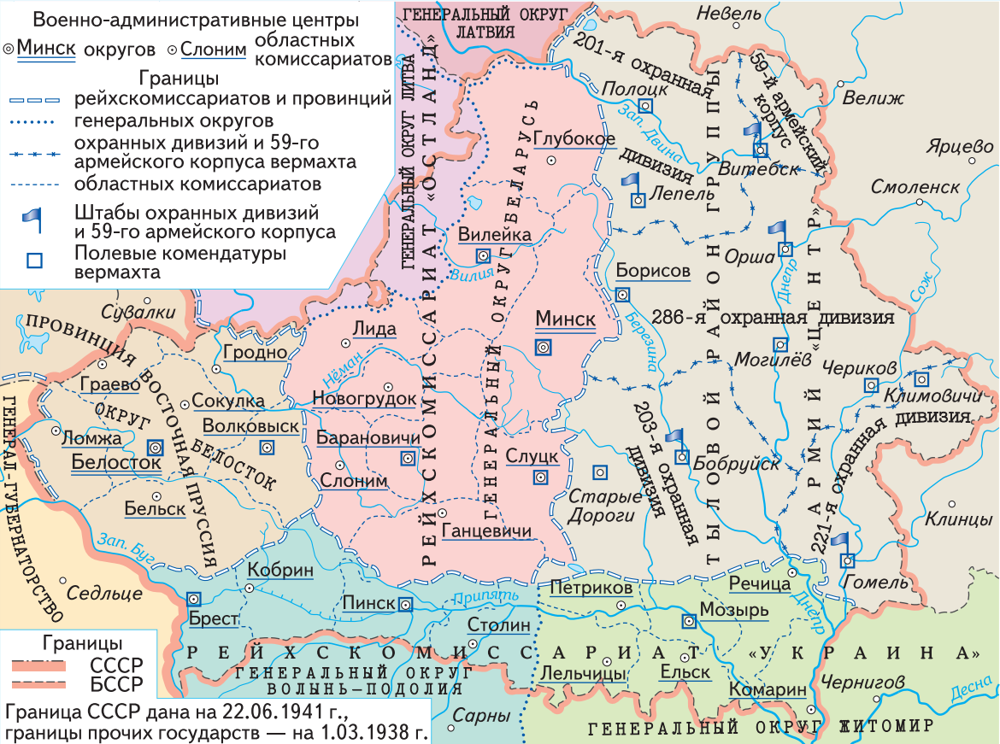
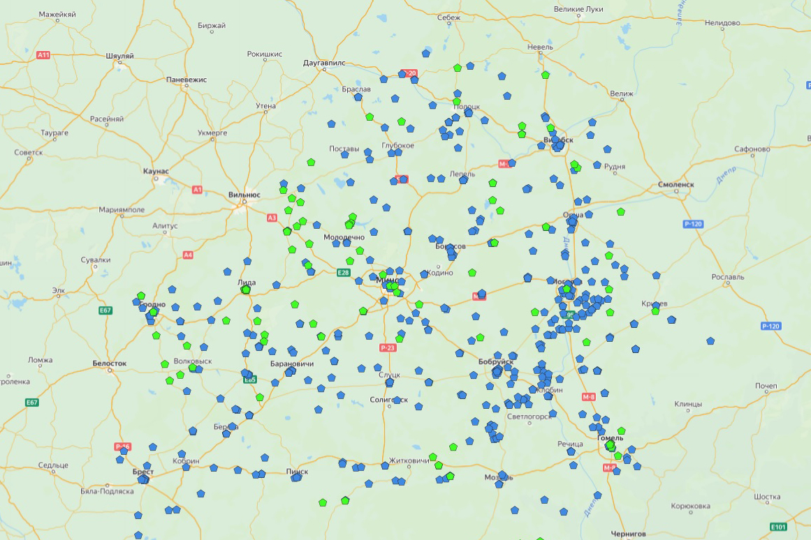
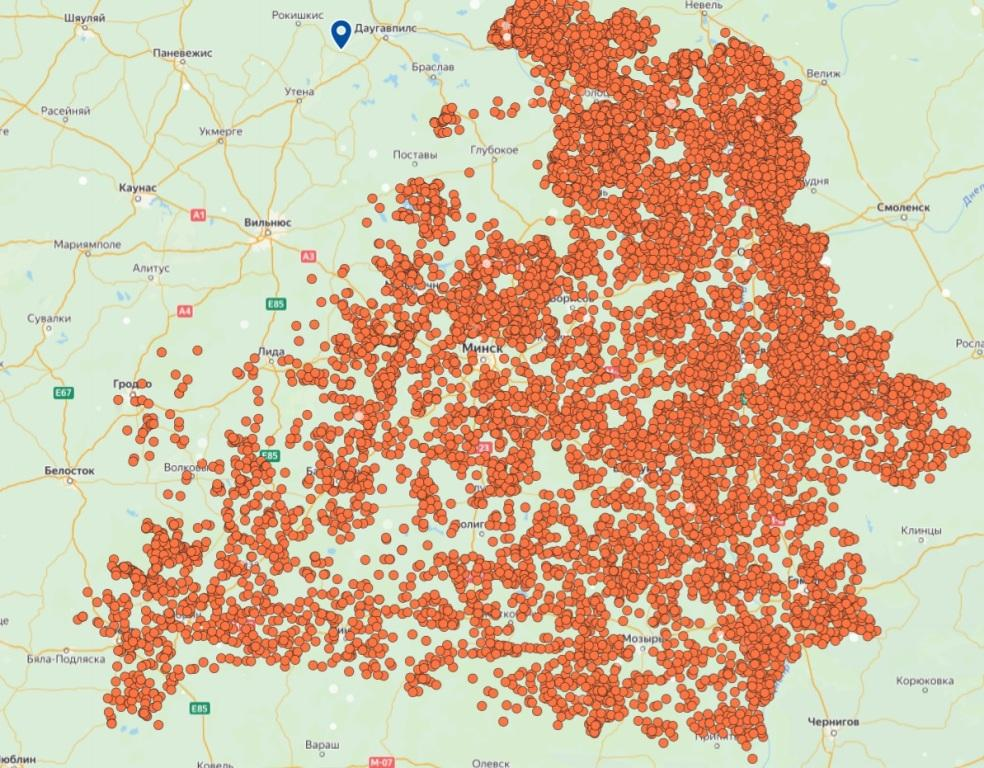

Геноцид — действия, совершаемые с намерением уничтожить, полностью или частично, какую-либо национальную, этническую, расовую или религиозную группу как таковую путём:
- убийства членов этой группы;
- причинения серьёзных телесных повреждений или умственного расстройства членам такой группы;
- мер, рассчитанных на предотвращение деторождения в такой группе;
- насильственной передачи детей из одной человеческой группы в другую;
- предумышленного создания жизненных условий, рассчитанных на полное или частичное физическое уничтожение этой группы.
Из Конвенции ООН1 о предупреждении преступления геноцида и наказании за него от 9 декабря 1948 года
Сметри и разрушения:
- Массовое уничтожение людей: истреблено более 3 млн мирных граждан военнопленных
- Угон населения на принудительные работы: угнано в фашистское рабство под угрозой смерти более 380 тыс. человек, из которых многие погибли в результате невыносимых условий труда, лишений и истязаний
- Разрушение населённых пунктов: разрушено и сожжено: 209 городов, не менее 11 726 сельских населённых пунктов. 270 деревень разделили трагическую судьбу Хатыни
В отношении населения БССР2 немецко-фашистские оккупанты, их европейские союзники, в том числе из Италии, Румынии, Венгрии, Словакии, Финляндии и других государств, проводили целенаправленную политику геноцида.
Жители Беларуси подверглись всем формам геноцида, которые определены Конвенцией ООН о предупреждении преступления геноцида и наказании за него от 9 декабря 1948 года.
Проведение политики геноцида белорусского народа было закреплено в нормативных документах нацистской Германии. Такие документы, как Генеральный план «Ост», Инструкция об особых областях к директиве № 21 (план «Барбаросса») от 13 марта 1941 года, распоряжение начальника штаба верховного главнокомандования вооружённых сил Германии «О военной подсудности в районе “Барбаросса” и об особых полномочиях войск», подписанное 13 мая 1941 года начальником штаба вермахта В. Кейтелем, и др., возводили зверства фашистов по отношению к мирному населению в ранг государственной политики и освобождали гитлеровских солдат от ответственности за преступления.
Например, план «Ост» предполагал порабощение и уничтожение народов СССР, еврейского и славянского населения завоёванных территорий. В основу плана легла расовая человеконенавистническая теория, так называемая новая территориальная политика гитлеровской Германии. Генеральный план «Ост» представлял собой комплекс документов, в которых рассматривались вопросы заселения «восточных территорий» (Польши и Советского Союза) в случае победы Германии в войне.
Этим планом предусматривалось выселить с занимаемой территории, что фактически означало уничтожить, 75 % населения Беларуси, а оставшиеся 25 % онемечить. Цыган, евреев, живших в Беларуси, ожидало полное истребление.
Территорию Беларуси планировалось включить в состав нацистской Германии и заселить немцами. По замыслам нацистов местное население оккупированных территорий должно было исчезнуть — целыми этническими группами и народами.
Колонизация Востока — конечная цель Генерального плана «Ост». Не позднее чем через десять лет Гитлер желал получить донесение о том, что «на присоединённых к Германии или же занятых нашими войсками восточных землях живёт как минимум 20 млн немцев».
В сентябре 1941 года, когда вся территория БССР была захвачена немецко-фашистскими войсками, в неволе оказалось примерно 7–7,5 млн её жителей.
«Военно-административное деление оккупированной территории Беларуси 1942 г.»
С первых дней оккупации фашисты ввели особый режим, который ограничивал права и свободы жителей Беларуси:
- всё население подлежало обязательному учёту;
- запрещалось проводить митинги и собрания;
- вводился пропускной режим, комендантский час4 и др.
Руководство нацистской Германии разрешило своей армии истреблять мирное население завоёванных земель любыми средствами:
- уничтожать города, сжигать деревни вместе с жителями;
- забирать у населения продовольствие и скот;
- организовывать места принудительного содержания советских граждан с невыносимыми условиями;
- заставлять много и непосильно работать;
- изнурять голодом и холодом;
- применять расстрелы и виселицы, газовые камеры и сжигание;
- распространять эпидемии, не оказывать медицинской помощи.
Для организации и проведения геноцида руководство нацистской Германии и высшее командование гитлеровской армии направило на территорию БССР карательные подразделения: войска СС5, органы полиции безопасности и СД6, айнзацгруппы7, зондеркоманды8, латышские, литовские, украинские и другие коллаборационистские формирования.
Массовое уничтожение людей должно было подавить малейшие попытки сопротивления населения оккупационному режиму.
Одним из основных орудий истребления белорусского населения были лагеря смерти — места массового содержания и истребления людей. Всего на оккупированной врагом территории Беларуси было создано свыше 580 лагерей смерти.
Места принудительного содержания населения (лагеря смерти), созданные нацистами в период оккупации БССР (по материалам уголовного дела о геноциде белорусского народа)
Десятки тысяч людей, в том числе целыми семьями, заключались в лагеря смерти. Условия содержания в них были невыносимыми: голод, холод, непосильный труд, побои, истязания.
В лагерях смерти над узниками проводили различные опыты: их специально заражали инфекционными болезнями, испытывали на них действие отравляющих газов, подвергали воздействию низких температур, чтобы определить способности человеческого организма переносить их, и т. д. Труд узников широко использовался при строительстве военных объектов.
На оккупированной территории Беларуси лагеря смерти, их филиалы и отделения действовали на протяжении всего периода нацистской оккупации. В лагерях смерти на территории Беларуси нацисты уничтожили свыше 1,4 млн человек.
В Минске и его окрестностях гитлеровцы создали целую систему лагерей смерти: лагерь смерти «Тростенец», лагерь смерти у деревни Дрозды Минского района, лагерь смерти на ул. Широкой в Минске, лагерь смерти Шталаг 352 у деревни Масюковщина, Минское гетто.
...
Неотъемлемой частью немецко-фашистского оккупационного режима, наиболее радикальным средством утверждения и поддержки «нового порядка», реализации преступных планов германского командования стали карательные операции. За 1941–1944 годы оккупанты провели на территории Беларуси не менее 187 крупных карательных операций (по материалам уголовного дела о геноциде белорусского народа).
На территории Беларуси карательные операции стали проводиться уже в первые военные месяцы и включали издевательства, массовые расстрелы, сожжение целых населённых пунктов. С первых дней войны гитлеровские войска и специально созданные команды СС и СД уничтожали население Беларуси.
В июле 1941 года в Барановичах Г. Гиммлер провёл совещание, на котором было принято решение о проведении масштабной операции по очищению оккупированной территории Брестской, Барановичской, Пинской и Полесской областей от враждебных нацистам элементов: подразделений Красной Армии, попавших в окружение, партизан и местного населения. Операция получила название «Припятские болота». Она проводилась с 19 июля по 31 августа 1941 года. В ходе операции также отрабатывались методы массового уничтожения еврейского населения, в том числе путём утопления в болотах. На 13 августа 1941 года в результате карательной операции было убито 13 788 человек.
Каратели значительно активизировались осенью 1941 года. Гитлеровское руководство требовало проводить устрашающие акции против гражданского населения, вывозить мирных жителей на работы в Германию, захватывать продовольственные ресурсы и другие материальные ценности.
В сентябре – ноябре 1941 года карательные операции прошли на территории Пинской, Витебской, Гомельской, Минской, Могилёвской и Полесской областей. По неполным данным, в этих операциях оккупантами было убито более 7 тыс. человек.
С весны 1942 года оккупанты перешли к крупным карательным операциям против быстро расширяющегося движения сопротивления и к массовому уничтожению гражданского населения.
Стандартным сценарием, взятым на вооружение нацистскими военными преступниками и их пособниками, стало уничтожение деревень вместе с жителями в рамках войны с партизанами.
Карательные операции очень быстро приобрели характер тотального уничтожения мирного населения. Конечным результатом стало создание так называемых мёртвых зон, превращённых в выжженную пустыню.
Именно во время крупных карательных операций было сожжено и разрушено не менее 11 726 сельских населённых пунктов, некоторые из них подвергались сожжению несколько раз.
В составе фашистских карательных подразделений действовало подразделение под командованием О. Дирлевангера, которое комплектовалось из осуждённых за различные преступления. В 1943 году оно достигло численности полка и получило название «Особая команда СС Дирлевангер». Летом 1944 года подразделение было увеличено («Особая бригада СС Дирлевангер»). С 1942 года формирование стало принимать активное участие в акциях против партизан и местного населения.
Карта сожжённых деревень на территории Беларуси (по материалам уголовного дела о геноциде белорусского народа)
Примерное представление о масштабах трагедии можно получить, рассмотрев карту, на которой обозначены уничтоженные населённые пункты.
...
В разработке...
В разработке...
В разработке...
В разработке...
В разработке...